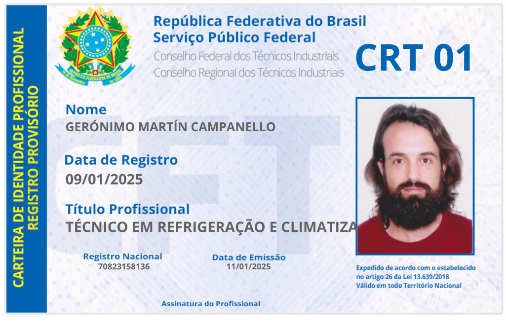

📜 Registro Profissional CRT

Técnico Industrial em Climatização e Refrigeração
Registro desde 2025 | CRT - Brasil
🎪🔧🎵💻 Quem é o Dr. Eletron?
👋 Prazer, sou eu, Gerónimo!
Um técnico que nunca largou a arte
Talvez você espere encontrar aqui a história de um técnico comum, com ferramentas comuns e uma trajetória comum. Mas a vida não é linear, e a minha prova disso!
📌 Minhas faces:
Técnico CRT
Registrado no Conselho Regional dos Técnicos Industriais. Especialista em refrigeração, climatização e elétrica — com responsabilidade técnica de verdade.
Artista circense
Quase inativo, mas com história no picadeiro. Ainda aceito convites especiais e desenvolvo projetos culturais que unem circo, música e reciclagem criativa.
Músico de berço
Há mais de 15 anos tocando vários instrumentos por hobby. Já criei trilhas e composições para espetáculos cênicos — a música vive em mim, mesmo sem palco.
Desenvolvedor front-end
Em formação (TADS). Crio sites simples, bonitos e responsivos. Este site é meu primeiro case! Conheça meus trabalhos →
📖 Projetos culturais
Livro digital artístico - Criei os textos em parceria com uma ilustradora. Um livro criativo disponível gratuitamente.
Baixar →
Espetáculos autorais - Desenvolvi meus próprios espetáculos e participei de montagens de outros artistas, sempre levando um pouco de malabares e música.
Reciclagem criativa - Dentro dos projetos circenses, já desenvolvi oficinas e intervenções usando materiais reciclados. A sustentabilidade também é arte.
🏥 Técnico responsável em Clínica de Tratamento Renal
🤔 Como assim, tudo isso?
Cuido de mais de 30 equipamentos distribuídos na clínica, garantindo o funcionamento perfeito dos sistemas de climatização essenciais para o tratamento dos pacientes. Responsabilidade, precisão e cuidado em cada detalhe.
Descobri que a mesma precisão que uso para diagnosticar um defeito elétrico é a que aplico no equilíbrio dos malabares. A mesma paciência para ouvir um motor barulhento é a que uso para criar uma melodia. A mesma criatividade que transforma sucata em arte é a que uso para criar sites bonitos.
🌟 O que me move?
Acredito que tecnologia e sensibilidade podem (e devem) caminhar juntas. Que um reparo bem-feito é também um ato de cuidado. Que um site bonito é também uma forma de arte.
🎯 Para quem trabalho?
• Residências e comércios que precisam de climatização, refrigeração e elétrica
• Pequenos negócios que desejam um site profissional e personalizado
• Artistas, produtores e espaços culturais que buscam parcerias criativas
• Projetos que querem unir tecnologia, arte e consciência ambiental
📬 Vamos conversar?
Seja qual for sua necessidade — técnica, digital ou artística — estou aqui para somar. Afinal, o melhor da vida acontece quando a gente conecta os pontos (e os fios!).
👉 Entrar em contato"Dr. Eletron: um técnico registrado que nunca deixou a arte de lado."